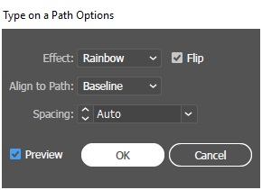

Nogen lunde samme princip som med photoshop, hvor man kan manipulere selections og farve dem.
Går man ind under f.eks. Stjernen, så kan man bruge pile tasterne til at bestemme hvor mange takker. Shift, Ctrl og Alt bruges også til at manipulere selections.
For at lave EU-flaget, startede jeg med en rectangle selections for baggrunden. Derefter et nyt layer med en gul stjerne.
Den gule stjerne blev markeret og alt-shifted over på den anden side af canvas ( for at skabe en start og end path). Derefter blev blend tool taget i brug.
Blend tool har nogle forskellige funktioner, men den der blev taget i brug var Specified Steps. Jeg skulle bruge 12 stjerner, så jeg satte settings til 11, fordi jeg allerede havde 2 stjerner i forvejen. Start og end point kommer til at ligge ovenpå hinanden, så der kun vil være 12 synlige, og ikke 13. Stjernerne vil ligge på en lige række. For at få dem til at følge cirkle pathen, skal man lave en cirkel og gå ind under Object (oppe i toppen af illustrator), og gå ind under blend og klikke på replace spline. Så skulle stjerne gerne følge cirkle-pathen.
Drop Shadow findes under Effect (oppe i toppen af illustrator) --> Stylize --> og drop shadow. Derefter sætter man sine settings på hvordan shadowen skal foregå. "Preview" ticked, så man kan se hvordan det ser ud.
Der er brugt en ellipse som path-definer. Derefter holdes "T", text i bundt, for at få flere kategorier ud.
Først står teksten helt forkert, men de små arrows som popper ud, når man hover-over disse rød-cirkle-markeret figurere, kan redigere hvorpå teksten skal stå.
Kopier man teksten øverst og paste-in-place, kan man double klik på "T", text. Så vil denne menu poppe op. Flip blev ticket, så teksten ikke vil stå som øverst, men stå inden i cirklen i stedet.
